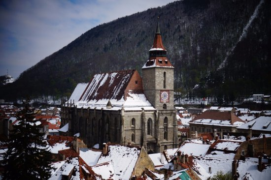
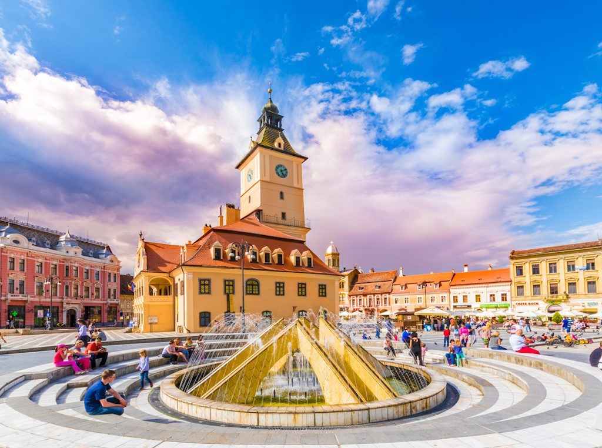
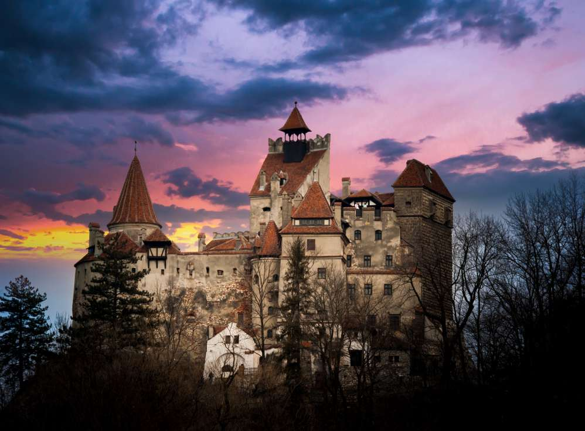

.TRAVEL.
Welcome to Brașov
City in Romania

Why Brașov ?
Hollywood of Eastern Europe
With its central location, Brașov is a suitable location from which to explore Romania, and the distances to several tourist destinations (including the Black Sea resorts, the monasteries in northern Moldavia, and the wooden churches of Maramureș) are similar. It is also the largest city in a mountain resorts area. The old city is very well preserved and is best seen by taking the cable-car to the top of Tâmpa Mountain.
The city also has several restaurants that serve local as well as international cuisine (e.g. Hungarian and Chinese). Some of these are situated in the city center.
Places
My favorite places in Brașov

The Black Church

The Council Square
